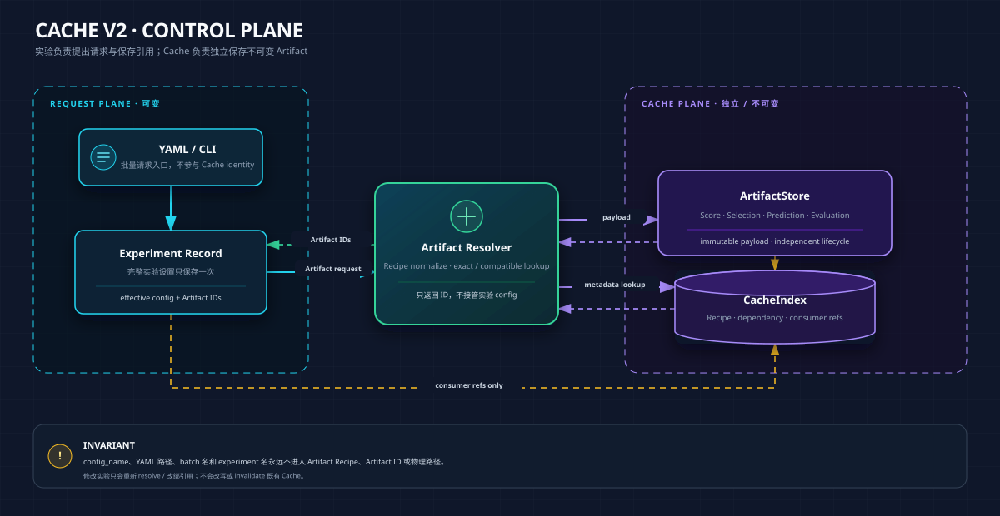
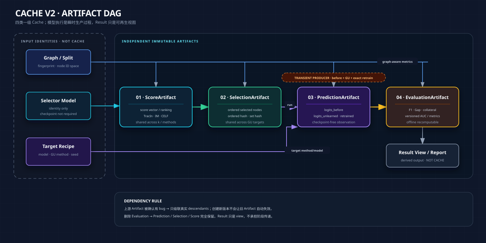

Cache V2 架构与 Legacy 迁移方案
这页回答两个问题：
OpenGU/GULib 的 Cache 怎样脱离实验 YAML/config 独立存在，同时支持跨实验复用、单件删除、自动补齐、真实依赖级联和安全迁移？
当前 Legacy ResultCache、SelectionCache、ScoreCache 与
results/runs怎样进入 V2，同时抢救 selected nodes 和 predictions，不把历史 bug 一起升级成权威数据？
0. 一分钟结论
V2 只有四类一级 Cache：
ScoreCache
↓
SelectionCache
↓
临时执行 GU + exact retrain
↓
PredictionCache
↓
EvaluationCache
锁死以下边界：
- Cache 与实验 config 文件无关。
config_name、YAML 路径、batch 名、experiment 名都不进入 Cache identity 和物理路径。 - Cache 只由产物的最小计算依赖决定。 这些依赖组成 Artifact Recipe，不是分阶段保存的实验 config。
- 实验只是 Cache 的消费者。 实验设置在实验层完整保存一次，只引用 Artifact；它不拥有、命名或控制 Cache 生命周期。
- 修改实验 config 不会让旧 Cache 失效。 新请求重新解析并改绑引用；旧 Artifact 保持不可变，等待继续复用或零引用 GC。
- V2 不设 ResultCache。 最终结果是 EvaluationArtifact 的组合视图，不再复制一份“大而全 AttackResult”。
- V2 不设模型 checkpoint 型 RunCache。 GU 与 retrain 临时执行，缓存统一的三套 logits；checkpoint 仍可由个别方法自行保留，但不进入 V2 核心契约。
- AUC、F1、Gap、collateral 都属于 Evaluation。 Prediction 保存原始观测，指标定义以后可以换版本并离线重算。
- 上游 Artifact 真正有 bug 时，下游真实消费者失效；删除下游、修改实验、删除 YAML 都不能伤害共享上游。
- SSH 真机索引验收只是 V2.1 门槛，不是 Legacy 删除授权。 新计算写 V2、新旧结果对照、runner canary、Legacy 冻结与最终归档/删除必须按 §11.1 的六阶段 gate 逐项通过。
本 Markdown 仍是架构语义 source of truth；同名 HTML 只是浏览器导读版。V2.1 的可执行契约以 cache_v2/contracts.py、cache_v2/schema.py 与对应测试为实现层 source of truth，二者若有偏差必须 fail closed 并回写本页。
1. 当前 Legacy：As-Is
1.1 物理布局
results/
├── cache/ # Legacy 完整 ResultCache
│ └── <16位MD5>.json
│ ├── config
│ └── AttackResult
│ ├── selected_nodes
│ ├── f1_before / f1_after
│ ├── mia_auc
│ └── timing / cache trace
│
├── selection_cache/ # Legacy SelectionCache
│ └── <32位SHA256>.json
│ ├── selection config projection
│ └── selected_nodes / selection_time
│
├── score_cache/ # Legacy ScoreCache
│ ├── if/ # TracIn score
│ ├── im/ # IM initial marginal gain
│ └── im_celf/ # CELF sequence
│
└── runs/ # 正式实验证据目录
└── <dataset_model_ratio>/<method_strategy>/seed*/
├── attack.json
├── collateral.json
├── predictions.npz
└── _meta.json
data/
├── GraphRevoker/ # 方法副作用：checkpoint / processed state
├── GraphEraser/
└── GNNDelete/
1.2 当前执行顺序
experiments/run.py
│
├─ 检查 results/runs 整 cell 是否有四件产物
│
├─ demo_attack
│ ├─ 先查 ResultCache
│ ├─ 再查 SelectionCache
│ ├─ selector 内再查 ScoreCache
│ └─ 执行 GU，写 attack.json
│
└─ eval_collateral
├─ 再次执行 before + GU + retrain
├─ 从 ResultCache 取 selected_nodes
└─ 写 collateral.json + predictions.npz
Legacy 中“先查完整 ResultCache，再查更细 Cache”的宏观顺序没有问题；问题是完整 Result 同时承担缓存、阶段中转、身份和索引，miss 后又缺少统一 Artifact Resolver。
1.3 远端实测快照
2026-07-12 对 SSH /autodl-fs/data/OpenGU/GULib-master 的只读盘点：
| 路径 | 数量 / 规模 | 说明 |
|---|---|---|
results/cache |
783 JSON，约 6.2 MB | Legacy AttackResult |
results/selection_cache |
110 JSON | method 字段为 0，实际上跨 method 共享 |
results/score_cache/if |
32 组 JSON+NPZ | TracIn score |
results/score_cache/im |
1 组 JSON+NPZ | IM score |
results/score_cache/im_celf |
4 组 JSON+NPZ | CELF sequence |
results/runs |
3146 文件，约 605 MB | 正式实验产物 |
一次完整解析 783 个 ResultCache JSON 约 26.1 秒。eval_collateral fallback 扫描使重复查询接近 O(cells × cache_files)。
1.4 已确认的 Legacy 问题
问题一：ResultCache 同时承担四种职责
Legacy hash 文件同时承担：
- 产物身份；
- 查找索引；
- 分类；
- demo_attack 与 eval_collateral 的中转。
V2 必须拆成：
- Artifact Recipe：定义产物由什么真正输入决定；
- Artifact ID / content hash：定义不可变产物；
- ArtifactStore：保存 payload；
- SQLite：索引、依赖、消费者引用；
- 实验层：保存完整实验设置并引用 Artifact。
问题二：attack 与 predictions 不是同一次执行
当前 demo_attack 和 eval_collateral 各自执行一次 GU。远端真实 cell cora/GCN/GIF/random/seed42 中：
attack.json f1_after = 0.8395
predictions logits_unlearned F1 = 0.8653
因此 attack.json 指标不能天然视为 predictions.npz 的派生结果。V2 必须让 PredictionArtifact 成为效果指标的唯一原始观测来源。
问题三：AUC 名称与协议混乱
Legacy mia_auc 经历过：
- MEGU / GraphEraser 调用被注释后长期输出 0；
- 实际协议不是标准 shadow-model MIA，而是 posterior shift deletion audit；
- GIF/IDEA、GNNDelete/MEGU、GraphEraser/GraphRevoker 使用不同 forward、采样数量和 ensemble 查询方式。
V2 不把任何一个旧 AUC 定义写进 PredictionCache。只保存原始 logits、label、mask 和 selected nodes；AUC 由 versioned Evaluation Recipe 离线产生。
问题四：方法 checkpoint 是无治理副作用
SSH 上 GraphRevoker、GraphEraser、GNNDelete 存在部分 checkpoint，GIF/IDEA/MEGU 没有统一持久化模型。现有文件名不能稳定绑定完整 cell、selection hash 和 producer version。
这些文件不升级为 V2 核心 RunCache。需要时只作为 method-local legacy state 审计。
问题五：共享存在但不可治理
Score 与 Selection 已经被多个 method / experiment 共享，但系统没有可靠记录：
- 哪些 Artifact 消费了该上游；
- 哪些实验正在引用它；
- 一个上游有 bug 时真实下游范围是什么；
- 何时可以物理 GC。
2. V2 设计不变量
- ArtifactStore 独立于 experiment/config/YAML。
- 四类一级 Cache 固定：Score、Selection、Prediction、Evaluation。
- Artifact immutable。 已登记产物不原地改写；新内容产生新 Artifact ID。
- Artifact Recipe 只包含真正改变该产物的输入。 不包含 config 名、YAML 路径、batch 名、报告名。
- 实验设置在实验层完整保存一次。 Cache 中不保存四份“阶段 config”。
- 实验通过引用消费 Artifact。 修改或删除实验只改变引用，不改变 Artifact 内容与有效性。
- 配置变化不是 Cache invalidation。 新请求重新 resolve；旧 Artifact 继续存在。
- 只有产物自身缺陷才触发 invalidation。 包括 producer bug、明确退役版本、内容损坏和错误 provenance。
- 上游 Artifact 失效只级联到真实 Artifact descendants。
- 删除下游不能伤害 parent、sibling 和其他消费者。
- 文件缺失与语义错误分开处理。 能重建出相同 content hash 时，下游无需重算。
- SQLite 是可重建索引，不是 payload 和唯一真相。
- Legacy 只读旁路迁移。 验证前不批量重命名或删除。
- 时间是 Artifact producer metadata，不是 Cache identity。
- 本架构只服务 OpenGU 实验治理，不扩张为通用工作流平台。
3. 正确的对象关系
3.1 Cache、实验与 YAML

边界：
- YAML 可以改名、拆分、合并；Cache 不受影响。
- 两份 YAML 只要请求相同 Artifact Recipe，就命中同一个 Artifact。
- Experiment record 用于复现实验，不参与 Artifact identity。
- Cache 可以在没有任何当前实验 config 的情况下独立存在。
3.2 Artifact DAG

可选路径：
- random / degree / PageRank：Graph identity 直接产生 SelectionArtifact。
- IM：Graph → IM score / CELF → SelectionArtifact。
- TracIn：Graph + selector model identity → ScoreArtifact → SelectionArtifact。
- GU 与 retrain 只在生成 PredictionArtifact 时临时执行。
- Evaluation 可以同时依赖 PredictionArtifact 和 graph identity，例如 hop-decay。
- Result view 只组合 Evaluation 与 provenance，不复制成第五类 Cache。
4. 四类 Artifact 契约
4.1 ScoreArtifact
用途：保存昂贵 selector 中间结果，例如 TracIn score vector、IM marginal gain、CELF sequence。
最小内容：
artifact_id
artifact_type = score
recipe
recipe_hash
content_hash
producer_version
ordered score/ranking payload
compute_seconds
provenance
典型 Recipe：
| Strategy | 真正依赖 |
|---|---|
| TracIn | graph fingerprint、selector model identity、score algorithm/version、query set、相关超参 |
| IM | graph fingerprint、IM version、MC seed、candidate policy、相关超参 |
| degree/PageRank | 通常不需要单独 ScoreArtifact；需要保存 ranking 时只依赖 topology 与算法版本 |
4.2 SelectionArtifact
用途：保存有序 selected nodes，是多个 GU method 的共享上游。
最小内容：
artifact_id
artifact_type = selection
recipe / recipe_hash
selected_nodes_ordered
ordered_nodes_hash
node_set_hash
source_score_artifact_id（可空）
graph_fingerprint
candidate_set_hash
producer_version
compute_seconds
共享边界：
| Strategy | 合理共享范围 |
|---|---|
| degree / PageRank | 跨 GU method、跨 target model；依赖 topology/ranking/k |
| IM | 跨 GU method、跨 target model；依赖 graph、IM recipe、selector seed、k |
| random | 同一 graph/split、random recipe、seed、k |
| TracIn | 同一 selector model identity、score recipe、query set、k |
| hybrid | 同一分支 Artifact 与 fusion recipe、k |
SelectionArtifact 不是一份实验配置，也不属于创建它的 YAML。
4.3 PredictionArtifact
用途：保存一次标准化执行产生的原始预测观测。V2 不要求保存 checkpoint。
固定核心：
logits_before [N, C]
logits_unlearned [N, C]
logits_retrained [N, C]
必要上下文：
y [N]
train_mask [N]
test_mask [N]
retain_mask [N]
selected_nodes [K]
node_id_space
class_order
graph_fingerprint
selection_artifact_id
target method/model recipe
producer_version
compute_seconds
可选 producer timing breakdown：
{
"compute_seconds": 18.4,
"timing_breakdown": {
"before": 5.1,
"unlearn": 2.3,
"retrain": 10.6,
"export": 0.4
}
}
约束：
compute_seconds必须有；breakdown 可选。retrain_time不作为一级字段，不影响 Artifact 完整性。selection_reuse_time不保存进正式 Artifact。- method 自报的
avg_unlearning_time只可放入legacy_timing，不用于跨方法统一比较。 - GraphEraser/GraphRevoker 必须输出统一全局 node ID 空间的 aggregate posterior，不能把单 shard model 输出伪装成全局 PredictionArtifact。
4.4 EvaluationArtifact
用途：由 PredictionArtifact 和必要的只读输入派生指标。
4.4.1 单 Prediction 指标：V2.0 核心
这类指标只依赖一个 PredictionArtifact 与必要的只读 graph/split 输入，可以直接进入 V2 EvaluationCache：
- F1 before / unlearned / retrained；
- F1 drop；
- approximation/retrain gap；
- mean/max prediction shift；
- fraction flipped；
- hop-distance collateral decay；
- degree alignment；
- posterior-based AUC family。
Evaluation Recipe 必须 versioned。例如：
{
"metric": "update_detection_auc",
"version": "v2",
"prediction_artifact_id": "pred_xxx",
"positive_policy": "selected_nodes",
"negative_policy": "deterministic_matched_test",
"sampling_seed": 2024,
"score_function": "softmax_l2"
}
PredictionCache 不决定 AUC 定义。由现有 logits 可以继续计算 confidence、loss、entropy、KL/JS shift 等 posterior-based AUC。需要 shadow model、embedding 或 gradient 的未来攻击不属于纯 Prediction evaluator，需要另建对应上游 Artifact 类型或扩展 Prediction schema；当前 V2 不提前设计。
4.4.2 跨 cell / cohort 指标：独立指标层
以下指标依赖多个 Prediction/Evaluation、budget-matched random 对照或多 seed，不伪装成单 Prediction Evaluation：
- paired effect；
- noise / volume / attack decomposition；
- paired t-test；
- budget efficiency；
- 跨 method / dataset / backbone 的聚合统计。
V2.0 先把这些指标及其输入清单记录在独立 metrics/cohort 段；它们可以由 Result view / report 动态生成。只有确认反复计算成本值得缓存时，才增加显式的 input_artifact_ids[] + cohort_recipe，不影响 Score、Selection、Prediction 主路径。
4.5 Result view 不是 Cache
人类需要的一个 cell 结果可以动态组合：
Experiment provenance
+ Selection reference
+ Prediction reference
+ requested Evaluation artifacts
= Result view / report row
可以为了导出生成 JSON/CSV/HTML，但这些是可再生 view，不进入 Cache identity，也不反向给阶段传数据。
5. Artifact Recipe：不是实验 config
5.1 定义
Artifact Recipe 是某个产物的最小计算依赖集合。它由 Resolver 从请求的实际值中规范化构造，但不保存为“该阶段的实验 config”。
完整 ExperimentConfig：实验层保存一次，用于复现
Artifact Recipe：Cache 内描述某一产物怎样生成
禁止进入 Recipe 的字段：
config_name；- YAML 文件路径与文件名；
- batch 名；
- experiment display name；
- 报告路径；
- 与该产物输出无关的 method/evaluator 参数。
5.2 四类 Recipe
| Artifact | Recipe 核心依赖 | 不应包含 |
|---|---|---|
| Score | graph、selector identity、score algorithm/version、相关参数 | target GU method、YAML 名、k（若保存完整 ranking） |
| Selection | source score/ranking 或 topology recipe、selection rule、seed、k | target GU method、target seed（若无关）、metric |
| Prediction | graph/split identity、SelectionArtifact、target model/method recipe、run seed | AUC/F1 定义、报告配置、YAML 名 |
| Evaluation | PredictionArtifact、metric recipe、必要 graph identity | selector 内部参数、训练 checkpoint 路径、YAML 名 |
5.3 selector model 与 target model
TracIn 必须区分：
selector_model_identity = 谁产生 score / selection
target_model_recipe = 谁接受删除并执行 GU
模型身份是 Recipe 的一部分，不要求持久化模型 checkpoint。它至少包含 architecture、训练 seed、训练相关参数、graph/split identity 和 producer version。
这使以下共享自然成立：
GCN-TracIn SelectionArtifact
├── GCN target / GNNDelete
├── GAT target / GNNDelete
└── GIN target / GNNDelete
6. Artifact ID、物理目录与 SQLite
6.1 物理布局
results/cache_v2/
├── artifacts/
│ ├── score/
│ │ └── <human-readable-semantic-scope>/<artifact_id>.json|npz
│ ├── selection/
│ │ └── <human-readable-semantic-scope>/<artifact_id>.json
│ ├── prediction/
│ │ └── <human-readable-semantic-scope>/<artifact_id>.json|npz
│ └── evaluation/
│ └── <metric-family>/<artifact_id>.json|npz
└── index.sqlite
results/experiment_records/ # Cache 之外
└── <experiment_id>.json # 完整 config + artifact refs
results/batch_records/ # 可选，Cache 之外
└── <submission_id>.json # 某次 YAML 展开了哪些 experiment
上图是 V2.2 以后可能采用的目标布局，不是 V2.1 已创建的 payload 目录。V2.1 只定义可空的 semantic_path 字段，并强制它是规范化相对路径：禁止绝对路径、.. 穿越和对当前 cwd 的隐式依赖。精确目录层级暂不拍死；以下仅是非规范性候选：
score/cora/selector-GCN/tracin-proper-v1/
selection/cora/tracin-proper-v1/k108/
prediction/cora/target-GIN/GNNDelete/r0.05/seed42/
evaluation/update-detection-v2/
未来目录不能包含 A6、C6 或 YAML 名称。V2.1 不写正式 payload，也不创建 artifacts/；只有显式 legacy index --apply 才允许创建 results/cache_v2/index.sqlite，默认 dry-run 连数据库和目录都不创建。
6.2 Artifact ID
建议：
artifact_id = <type-prefix>_<recipe-hash-prefix>_<content-hash-prefix>
例：
sel_7f2a31c8_91ab72e4
pred_553a20d1_bbd402ac
recipe_hash用于查找语义相同的候选；content_hash用于验证真实 payload；- 同一
(artifact_type, recipe_hash)只允许一个正式 Artifact；正常请求应直接 hit。 - 强制重算得到相同
content_hash时视为验证成功，不新增 Artifact。 - 强制重算得到不同 content 时，原 Artifact 保持有效，新 payload 进入 quarantine 并登记 conflict；不能覆盖原件，也不能注册成第二个
validArtifact。
6.3 CacheIndex
SQLite schema version 1 只保存 metadata、关系和可重建索引，不保存大型 JSON/NPZ payload：
schema_meta(key, value)
artifacts(
artifact_id, artifact_type, recipe_hash, content_hash, recipe_json,
semantic_path, producer_version_json, status, verification_status,
compute_seconds, created_at, header_version, metadata_json
)
dependencies(
parent_artifact_id,
child_artifact_id,
relation
)
consumer_refs(
consumer_type, consumer_id, artifact_id, created_at, metadata_json
)
legacy_sources(
legacy_source_id, artifact_id?, legacy_kind, legacy_path, path_kind,
source_root, observed_artifact_type?, observed_recipe_hash?,
raw_content_hash?, semantic_content_hash?, verification_status,
size_bytes, mtime_ns, imported_at, metadata_json
)
artifact_conflicts(
conflict_id, artifact_type, recipe_hash, existing_artifact_id?,
existing_content_hash, observed_content_hash, legacy_source_id?,
quarantine_path?, detected_at, metadata_json
)
关键约束：
UNIQUE artifacts(artifact_type, recipe_hash)，保证一个 Recipe 只有一个正式 Artifact；content_hash负责验证 payload，不负责让同 Recipe 的多个正式结果并存；- 不同 content 写入
artifact_conflicts与 quarantine，不参与 Resolver hit； INDEX dependencies(parent_artifact_id)；INDEX dependencies(child_artifact_id)；INDEX consumer_refs(artifact_id)与(consumer_type, consumer_id)；legacy_sources.artifact_id可空：只读扫描到的 Legacy source 不是正式 Artifact；- schema version 同时检查
schema_meta、PRAGMA user_version与完整 DDL fingerprint；同版本但缺约束/索引也拒绝打开； - 写操作使用显式事务，异常回滚；数据库缺失、损坏、版本不符或 row/header 自洽性失败时一律 fail closed；
- Legacy 活跃路径保存相对
results的规范化路径，外部 source 才保存明确绝对路径； - 小型 Recipe/header metadata 有大小上限，任何 payload 都不得塞进 SQLite；
- append-only
index.jsonl在 V2.1 明确暂缓。
未来正式 Artifact Store 落地后，损坏的 index.sqlite 必须能由 versioned header/sidecar 重建。V2.1 先定义统一 ArtifactHeader metadata model，但不决定它最终嵌入 JSON/NPZ 还是使用统一 sidecar，也不写正式 payload。
7. Resolver 与自动补齐
7.1 查询流程
V2.1 只实现 read-only exact explain：
1. 从显式最小 Recipe 计算稳定 recipe_hash
2. exact lookup 正式 Artifact，并列出同 Recipe 的 Legacy exact candidates
3. 检查 status、verification、conflict 与全部 parent dependency health
4. 只有正式候选 valid + verified、无 conflict、无坏祖先才解释为 hit
5. 否则返回明确 miss reasons；Legacy candidate 只展示，不自动 promotion
6. 不计算、不写 Artifact、不执行 compatible/prefix hit
V2.2 以后的目标流程才会继续 compatible lookup、Legacy promotion gate、必要计算和实验引用登记。
同 Recipe 已有正式 Artifact 时：content 相同即复用；content 不同即 fail closed，将新 payload 隔离并登记 conflict。Resolver 永远不会在两个正式候选之间猜测。
Resolver 不接收或查询 config_name。V2.1 的实际入口是：
python scripts/cachectl.py resolve explain --type selection --recipe recipe.json
7.2 Compatible hit
以下仍是 V2.2 设计规则，V2.1 未实现正式执行：
- 相同有序 ranking/sequence 支持多个 k；较大 k 可以通过
SelectionRef(artifact_id, take_first_k)服务较小 k，不需要复制一个新 Artifact； - Prediction 必须同时记录本次实际使用的
take_first_k和有效前缀ordered_nodes_hash，不能只记录来源 Artifact ID； - 前缀复用要求 strategy/version、seed、候选池与排序算法完全相同。degree/PageRank/固定 score ranking 天然满足；deterministic random permutation 也可满足；
- IM CELF 只有在候选池相同时才能安全截断。当前剪枝规则是
n_keep = max(floor(M × candidate_fraction), k)：例如M=1000, fraction=0.1，k=50的候选池是 top-100，而k=200的候选池是 top-200；后者的前 50 个不保证等于直接在 top-100 上得到的 k=50。因此 Resolver 必须比较candidate_set_hash，相同才允许 prefix hit； - 同一 SelectionArtifact 跨 GU method / target backbone 复用；
- 同一 PredictionArtifact 支持多个 metric version；
- metric 修改只创建新的 EvaluationArtifact。
兼容命中必须有显式规则和 provenance，不能靠扫描后猜测“看起来像”。
7.3 Repair-on-read
以下属于 V2.2+，V2.1 不执行 repair 写回：
- 低成本且可无损恢复：自动重建；content hash 相同则恢复原 Artifact。
- 当前请求真正需要且缺失：计算新 Artifact 并登记。
- 昂贵但当前请求不需要：不自动预热。
- Legacy provenance 不足：注册为
legacy_degraded，不能伪造 authoritative Artifact。
8. 实验 config 与 Cache 生命周期彻底分离
8.1 Experiment record
实验层完整保存一次有效设置，并只保存 Artifact 引用：
{
"experiment_id": "exp_20260712_xxx",
"effective_config": {
"dataset": "cora",
"selector_model": "GCN",
"target_model": "GIN",
"strategy": "tracin",
"method": "GNNDelete",
"ratio": 0.05,
"seed": 42
},
"artifact_refs": {
"score": "score_xxx",
"selection": {
"artifact_id": "sel_xxx",
"take_first_k": 108,
"effective_ordered_nodes_hash": "sha256:..."
},
"prediction": "pred_xxx",
"evaluations": ["eval_gap_xxx", "eval_auc_xxx"]
}
}
effective_config 不复制进 Score/Selection/Prediction/Evaluation 四处。
8.2 修改 config
修改 config 的语义不是 invalidate Cache，而是重新 resolve：
旧 Experiment reference
↓ 修改请求
Resolver 查找新请求所需 Artifact
├─ 已存在 → 改绑引用
└─ 不存在 → 生成新 Artifact 后改绑
旧 Artifact 完全不变
├─ 仍有消费者 → 保留
└─ 零引用且满足 GC 条件 → 日后清理
示例：
| 操作 | Cache 行为 |
|---|---|
| YAML 改名 | 什么都不发生 |
| 一个 YAML 拆成两个 | 什么都不发生 |
| 两个 YAML 合并 | 什么都不发生 |
| 新增一个 method | 复用已有 Score/Selection，只 resolve Prediction/Evaluation |
| target model GAT → GIN | Score/Selection 可复用，resolve 新 Prediction/Evaluation |
| AUC v1 → v2 | 复用 Prediction，生成新 Evaluation |
| selector recipe 改变 | resolve 新 Score/Selection；旧 Artifact 不失效 |
| 删除一个实验 | 解除 consumer refs；不直接删除 Cache |
8.3 为什么仍然需要 consumer refs
引用只服务：
- 审计“哪个实验用了哪个 Artifact”；
- 计算零引用；
- 防止 GC 删除仍在使用的共享产物；
- 展示一个 Artifact 的消费者。
引用不参与 Artifact identity，也不赋予实验对 Artifact 的所有权。
9. Invalidation、删除与 GC
9.1 只有 Artifact 自身问题才 invalid
合法 invalidation 原因：
- producer 代码 bug；
- 算法版本被明确判废；
- payload content hash 不一致；
- graph/model provenance 错误；
- Legacy 已确认受污染。
不合法的 invalidation 原因：
- YAML 改名；
- experiment config 修改；
- 报告不再使用；
- 某个消费者删除；
- 另一个 method 需要重跑。
9.2 真实级联
retire(artifact_id, reason)
→ 将该 Artifact 标记 invalid/retired
→ 通过 dependencies 枚举全部真实 descendants
→ descendants 标记 blocked_by_parent / invalid
→ consumer records 显示需要重新 resolve
→ parents、siblings、无关 consumers 不变
示例：
Selection S1
├── Prediction GIF-P1
├── Prediction GNNDelete-P1
└── Prediction GraphRevoker-P1
S1 被确认由 selector bug 产生
→ S1 与三个真实 Prediction descendants 失效
→ S1 的 Score parent 保留
→ 其他 Selection siblings 保留
如果只是 selector recipe 升级而 S1 本身没有 bug，则创建 S2 并让新请求使用 S2；S1 不失效。
9.3 删除与 GC
删除操作分三类：
| 操作 | 语义 |
|---|---|
| unlink consumer | 解除实验/报告引用，不删除 Artifact |
| retire artifact | 判定产物不可信，级联真实 descendants |
| gc artifact | 零引用、无有效 child、超过保留期后物理删除 |
GC 必须满足：
- 无 consumer refs；
- 无有效 child dependency；
- 不属于冻结审计证据；
- 超过保留期；
- dry-run 已明确列出删除范围。
10. AUC 与时间的最终处理
10.1 AUC 延迟到 Evaluation
PredictionArtifact 已保存三套 logits、y、mask 和 selected nodes，因此可以以后选择：
- update-detection AUC；
- confidence AUC；
- loss/entropy AUC；
- KL/JS posterior shift AUC；
- 不同 deterministic negative sampling policy。
每种定义产生独立 EvaluationArtifact。旧 mia_auc 只作为 legacy derived value，不迁移为权威 V2 指标。
10.2 时间只记录原始计算成本
每个 Artifact 保存：
compute_seconds = 该 Artifact 原始生产耗时
不进入正式 Artifact 的字段：
selection_reuse_time；- cache lookup latency；
- 含义不统一的旧
total_time。
单实验逻辑计算成本动态求和：
cell_compute_time =
score.compute_seconds
+ selection.compute_seconds
+ prediction.compute_seconds
+ evaluation.compute_seconds
一批实验的真实 Artifact 生产成本按 unique Artifact 去重求和。retrain_time 只作为可选 Prediction producer breakdown，不是核心字段。
旧 OpenGU avg_unlearning_time 的边界由各 method 自行定义，是上游技术债；V2 保留时只能写入 legacy_timing，统一成本使用外层 Artifact producer wall time。
11. Legacy 迁移方案
下面的 Phase 0–6 是技术工作分解；是否允许切换或删除，以 §11.1 的六阶段验收门为准。任何单次 SSH 验收都不得跨过中间 gate。
Phase 0：冻结与盘点
- 旧
results/cache、selection_cache、score_cache只读； - 记录远端 branch/SHA、文件数、mtime、content hash；
- 不批量重命名、不先删除 ResultCache；
- 标注已知 bug/version 范围。
Phase 1：一次性 Legacy Index
python scripts/cachectl.py legacy index --root results --dry-run
输出：
- source path；
- 推断的 Artifact type 与 Recipe；
- selected-node ordered/set hash；
- prediction payload keys；
- producer/version 缺口；
- 同 Recipe 内容冲突；
verified / degraded / invalid / unknown建议状态。
远端旧快照中的 783 个 ResultCache JSON 只在建库时扫描一次；V2.1 cachectl/Resolver 的 metadata 查询走 SQLite，runner 与现有 Cache 查询路径仍未接入。
V2.1 于 2026-07-13 对当前本地 checkout 执行了上述精确 dry-run；这是本地证据，不覆盖 §1.3 的远端历史快照：
| 项目 | 本地 dry-run 结果 |
|---|---|
| 物理文件 / 逻辑 Legacy source | 2521 / 2508 |
| Legacy kind | Result 8；Selection 9；Score 13；run attack/collateral/meta 各 826 |
| 候选类型 | Score 13；Selection 835；Evaluation 826；无法权威归类 834 |
| 建议状态 | degraded 1673；invalid 1；unknown 834 |
| conflict / 同 content duplicate group | 1 / 1 |
| 默认排除目录 | 2 |
| 主要异常 | dangling selection ref 706；缺 graph fingerprint 826；缺 run component 826；Recipe 不完整 1652 |
夹心快照覆盖每个 active Legacy 文件的相对路径、大小、mtime 与 SHA-256：扫描前后均为 2521 文件、12,644,658 bytes，aggregate 均为 3e4fb7eb2129c69705cea626bf8ca70e2f3275fbf00ef478f6b883558e0e2b90。命令报告 writes=[]，真实 results/cache_v2/index.sqlite 不存在。
2026-07-14 从 SSH 隔离代码检出 9b90ad4 运行 cachectl，并把远端真实目录 /autodl-fs/data/OpenGU/GULib-master/results 作为 --root 完成 Gate 1；真实主 checkout 的 branch/HEAD 全程未切换。Gate 1 证据本身只验收 V2.1 Legacy 只读索引，不把后续独立 Selection canary 的 payload cold/warm 结果混入本表：
| 项目 | SSH Gate 1 实测 |
|---|---|
| dry-run 物理文件 / 逻辑 Legacy source | 4113 / 4076 |
| dry-run 写入 | 0；不创建 results/cache_v2 或 SQLite |
| Legacy 夹心快照 | file_states 集合、每项 SHA-256 与 mtime 扫描前后完全不变 |
显式 --apply 唯一新增文件 | results/cache_v2/index.sqlite |
| SQLite 内容 | legacy_sources=4076；artifact_conflicts=5；正式 artifacts=0 |
| 数据库验证 | integrity、schema version 与 DDL fingerprint 核对通过 |
| 远端测试 | tests/test_cache_v2.py 41 passed；SQLite、schema 与路径人工故障注入均 fail closed |
本次 --apply 只建立 Legacy source 索引，没有 promotion、没有正式 Artifact、没有 payload 写入，也没有修改 runner 或 Legacy 查询路径。远端 active inventory 比 2026-07-13 本地快照多 1592 个物理文件和 1568 个逻辑 source；两边的“物理数−逻辑数”分别为 37 和 13，来自 ScoreCache JSON sidecar 与 NPZ payload 两个物理文件合并为一个逻辑 source，不是扫描丢文件。
Phase 2：抢救 Score 与 Selection
优先注册最昂贵且共享价值最高的产物：
- ScoreCache 原地注册；
- SelectionCache 与
results/runs/**/attack.json双源核对； - 记录
ordered_nodes_hash、node_set_hash、selector version、selector model identity、graph fingerprint； - provenance 不足时标
legacy_degraded，不自动裁决冲突。
Phase 3：注册 PredictionArtifact
- 从
predictions.npz提取标准 schema； - 验证 shape、node ID、mask、selected nodes 与 graph fingerprint；
- GIF/IDEA pre-fix、GraphRevoker/GraphEraser 已知问题按 producer/version gate；
- 不把
attack.json的 F1/AUC 当作 Prediction 的权威字段； - 不迁移 checkpoint 型 RunCache。
Phase 4：离线生成 EvaluationArtifact
- 从 Prediction 统一计算 F1、Gap、shift、flip、hop-decay；
- 选择 versioned AUC evaluator 后批量补算；
- 对比 Legacy JSON 只做差异报告，不强求复制旧数字；
- 已知污染 Prediction 不生成 authoritative Evaluation。
Phase 5：切换主查询路径
- demo_attack / runner 使用 ArtifactResolver；
- selection 通过
selection_artifact_id显式传递； - Prediction 成为全部效果指标唯一原始来源；
eval_collateral不再扫描 ResultCache；- 实验记录写在 Cache 之外，只保存完整 config 与 refs。
Phase 6：退役 Legacy ResultCache
本段只是技术候选步骤，不是删除授权。只有 §11.1 Gate 1–6 全部通过并对删除范围单独审批后，才可以删除 Legacy ResultCache：
- selected nodes 已完成双 hash 抢救；
- Prediction 注册与 bug gate 完成；
- 关键 Evaluation 离线回算通过；
- Resolver 不再读取 ResultCache 作为阶段中转；
- 迁移覆盖率、
consumer_refs、新旧结果一致性已验收； - 冻结备份、回滚窗口和删除清单已生成。
11.1 六阶段验收门（2026-07-14 锁定）
| Gate | 必须证据 | 当前状态 |
|---|---|---|
| 1. SSH 真机验收 V2.1 | dry-run 零写入；Legacy hash/mtime 不变；--apply 只写 results/cache_v2/index.sqlite；SQLite、路径和 schema 异常 fail closed；本地/远端统计可解释 | 已通过（2026-07-14，9b90ad4） |
| 2. 新计算只写 V2 | 不双写 Legacy；Legacy 只作历史读取/迁移源；补齐 payload、versioned header 和 conflict resolution | 未通过；Selection exact-only materializer 已通过 IM、random、degree、PageRank 的真实计算/命中（2026-07-14），Score、runner、Prediction/Evaluation 与 conflict resolution 尚未接入 |
| 3. 新旧结果对照 | 抽样对照 Score、Selection、Prediction、Evaluation；Selection 节点有序序列精确一致；Prediction 按明确浮点容差比较，不要求文件 hash 相同 | 未通过；ogbn-arxiv IM 暴露 Legacy content mismatch（同 seed / k / 参数与同剪枝后 pool，但 ordered/set 均不一致） |
| 4. runner 切换 V2 | 先小范围 canary，通过后再设默认；查询失败禁止静默回退 Legacy | 硬阻塞：当前只有 conflict fail-closed 检测与 durable marker，没有可审计解除流程 |
| 5. Legacy 冻结 | 完全只读；保留明确回滚窗口；列出所有尚未迁移 Legacy Artifact | 未通过 |
| 6. 归档或删除 Legacy | 迁移覆盖率、consumer_refs、结果一致性、回滚备份全部通过，并对物理范围单独审批 | 未通过 |
Gate 必须按顺序推进。Gate 1 的一次真机通过绝不授权 Legacy 删除。 Gate 4 之前，conflict 解除机制是硬门槛：需要明确人工授权、保留原冲突证据、产生可追溯 resolution record，并证明 Resolver 只在解除后重新允许 hit。当前的 marker 只能阻止误命中，不是 resolution workflow。
2026-07-14 已在隔离 V2 store 完成真实 Citeseer Selection payload 的 cold miss → warm exact hit、producer fail-if-called 哨兵、payload mtime 不变、changed-k miss 与篡改拒绝验证；详见 Cache V2 Citeseer Selection Canary 真机验收报告。这只通过了 Gate 2/4 前的单条 Selection canary：没有接 runner，也没有验收 Prediction/Evaluation 或 conflict resolution，因此 Gate 2 与 Gate 4 状态均不变，更不得用 Gate 1 的 SQLite 命中解释替代真实 payload hit。
同日，b10f672 把 canary 收敛为独立 cachectl selection plan/materialize 主入口，并在 SSH 隔离 checkout 对真实 ogbn-arxiv、IM、k=1354 完成 cold 计算（13,583.91 s）→ 另一 YAML 的 warm exact hit（0.341 s）。warm 启用 fail-if-called 哨兵，仍返回同一 Artifact / Recipe / content hash，payload mtime 不变；9 个 cold consumer 请求去重为一个 Recipe，TracIn/Hybrid 以 producer_not_registered 结构化跳过。该结果验收了 V2 exact Cache 契约，没有接 runner。
同 seed Legacy 对照没有通过：V2 与 Legacy 前 164 个有序节点相同，但最终只交集 1252/1354，Jaccard 为 0.859890，双方各有 102 个独有节点。剪枝后 candidate pool fingerprint 均为 7237f1cd80d5d4eadd5c6d33484b9e47，因此不能归因于候选池不同；Legacy 记录缺 producer source fingerprint，且生成后 IM 源码仍有提交变化，现有 provenance 不能区分历史 source 变化与执行环境差异。Legacy 不参与 resolve，也没有被伪装成同一正式 V2 Recipe，因此本次不登记 V2 conflict，但 Gate 3 明确保持未通过。详见 Cache V2 IM Selection Materializer 真机验收报告。
同日继续注册 random、degree、PageRank 三个直接产生 SelectionArtifact 的 producer，并在真实 Cora 图上完成本机与 SSH exact canary：2 methods × 3 strategies × 3 seeds 共 18 个 consumer 请求去重为 5 个 Recipe（random 按 3 个 seed 各一份，degree/PageRank 各一份跨 seed 共享），cold 全部创建后，独立 warm 进程与另一 YAML 名/路径均返回相同 Artifact ID/content hash，且 producer_called=false；改变 ratio/k 的 plan 则 5/5 no_exact_candidate、零 producer、零写入。Random 使用显式 Recipe seed 与隔离 Torch RNG；PageRank 只额外包含 pagerank_alpha。首次 SSH 重放真实暴露 Degree v1 的 torch.topk 平分边界跨环境不稳定：同 Recipe fd84330c... 在本机/SSH 得到不同 content，且节点集合不同。V2 没有覆盖旧 Artifact，而是将 Degree 算法升级为“度降序、node id 升序”的 v2 全序，生成新 Recipe 5bc434cd...；全新本机/SSH store 随后均得到 Artifact sel_5bc434cd_7e66e515 与 content 7e66e515...。SSH Legacy 三目录 784/111/75 个文件的聚合 hash 前后均为 b7488cb1...；Random 三个 Legacy 对照为 content_mismatch，Degree/PageRank 为 missing，均不参与 V2 resolve。详见 Cache V2 Simple Selection Producers 验收报告。这完成了 producer registry 与 simple selector 真机确定性验收，但没有改变 Gate 2/3/4 的整体状态。
12. GraphRevoker 当前最小闭环
在 V2 主路径落地前：
- 范围固定为 Cora r0.05、GCN/GAT、random/degree/pagerank/im、5 seeds，共 40 selection identities。
- 双源核对 ablating 与 4090
attack.json；当前盘点为 40/40 存在、零 node-set 冲突。 - 将这 40 组注册为冻结 SelectionArtifact，不从当前局部 Cache 重新定义节点。
- 先跑 GCN/degree/seed42 canary。
- 新 Prediction 必须绑定 SelectionArtifact ID 与 selected-node hash。
- canary 通过后扩 40 cells。
- TracIn/Hybrid 等 selector version 锁定后再进入正式迁移。
13. Cache V2 解锁的实验：L2-surrogate transfer
V2 把 selector model identity 与 target model recipe 分开后，可正常表达：
GCN selection → GCN target
GCN selection → GAT target
GCN selection → GIN target
C.6a same-architecture surrogate
| 项目 | 设计 |
|---|---|
| Selector producer | 独立训练的 GCN surrogate |
| Target | GCN + GNNDelete |
| Seeds | 5 |
| 新增规模 | 5 cells |
| 目的 | 隔离相同 architecture、不同权重/seed 的迁移损失 |
C.6b cross-backbone surrogate
| 项目 | 设计 |
|---|---|
| Selector producer | GCN surrogate |
| Target | GAT / GIN + GNNDelete |
| Seeds | 5 |
| 新增规模 | 10 cells |
| 目的 | 模拟不知道 target backbone 的 query-free surrogate transfer |
边界：
- 这是 L2-surrogate / query-free 灰盒迁移，不称纯黑盒；
- 正式实验先锁定
proper-tracin-v1； - deployed cross-TracIn 只作 legacy diagnostic；
- 不同实验 YAML 可以直接复用同一 GCN SelectionArtifact。
14. 实施顺序
V2.0 架构契约
- [x] 四类 Artifact：Score / Selection / Prediction / Evaluation。
- [x] Cache 与 YAML/config/experiment identity 解耦。
- [x] Experiment settings 只在实验层保存一次。
- [x] Prediction 三套 logits 固定，不要求 checkpoint。
- [x] AUC 延迟到 versioned Evaluation。
- [x] Artifact producer time 规则。
- [x] immutable Artifact DAG、引用、retire 与 GC 语义。
- [x] selector model / target model 分离。
- [x] Recipe schema、versioned Artifact header metadata model 与 SQLite DDL 已机器化并通过测试。
V2.1 只读索引
- [x] 建立独立轻量
cache_v2/包：四类 Artifact、Recipe canonicalization、SHA-256 identity、header、producer 与状态契约。 - [x] 实现 schema v1 与六张表：
schema_meta / artifacts / dependencies / consumer_refs / legacy_sources / artifact_conflicts。 - [x] 实现初始化、三重 schema 检查、事务回滚、唯一正式 Artifact、幂等与 conflict fail-closed。
- [x] 实现默认零写 dry-run 的 Legacy indexer；archive/deprecated/backup/
cache_v2默认排除，坏单文件不中断全扫描。 - [x] ResultCache 只登记为 Legacy source；provenance 不足只给
unknown/degraded，没有 promotion 成正式 Artifact。 - [x] 实现 artifact
status / parents / children / consumers与 exact-onlyresolve explain。 - [x] 临时 fixture 可建库、查询 dependency/consumer、验证 idempotent/conflict；本地与 SSH 真实目录 dry-run 均完成且 hash/mtime 不变。
- [x] 本地
tests/test_cache_v2.py41 passed、既有相关测试 77 passed；远端9b90ad4上 41 passed，SQLite/schema/路径人工故障注入均 fail closed。 - [x] SSH 真实目录
--apply验收完成：唯一新增文件为results/cache_v2/index.sqlite，其中legacy_sources=4076、artifact_conflicts=5、正式artifacts=0。 - [x] 未修改 runner、现有 Cache 查询路径或任何 Legacy 文件；真实 Selection payload hit、promotion 与 Legacy 退役仍未进入 V2.1。
实现包使用顶层 cache_v2/，而非建议的 attack/cache_v2/：当前 attack/__init__.py 会连带导入严格解析 CLI argv 的实验配置，放在其下会让独立 cachectl legacy ... 在进入子命令前失败。该选择保持 runner 与旧查询路径零改动。
V2.2 Score / Selection 主路径
- [ ] gate：完成 Legacy promotion policy 与可审计 conflict resolution；provenance 缺口未清零的 source 不得 promotion。
- [ ] 将 IM 初始 spread / CELF ranking 落成正式 ScoreArtifact；当前大图 cold 仍因禁用 Legacy ScoreCache 承担完整 Step 1 成本。
- [x] 建立 versioned SelectionArtifact payload/header Store、SQLite exact resolve、完整性校验与 fail-if-called producer 哨兵。
- [x] 建立 YAML request → 最小 Recipe 投影；
config_name、YAML path、GU method 与实验 seed 不进入 IM Selection identity，多 consumer 先按 Recipe 去重。 - [x] 注册 IM producer；TracIn/Hybrid 在 Score/model provenance 就绪前结构化跳过，并保留同一 registry 扩展点。
- [x] 建立 ordered/set 双 hash 与只读 Legacy 对照；真实 arxiv 对照已 fail closed 暴露 mismatch，没有伪造等价。
- [x] 注册 random / degree / PageRank producer；真实 Cora 本机/SSH cold/warm、producer 哨兵、跨 YAML exact hit、changed-k miss、Random RNG 隔离、Degree v2 可移植 tie-break 与 Legacy 只读均已验证。
- [ ]
demo_attack、eval_collateral接受 selection artifact reference；本阶段仍未修改 runner 或现有查询路径。 - [ ] 建 ranking/prefix compatible lookup；当前只允许
(artifact_type, recipe_hash)exact hit。
V2.3 Prediction / Evaluation 主路径
- 建统一 Prediction exporter；
- 修正 shard ensemble PredictionProvider；
- 建离线 evaluator；
- attack/collateral/AUC 都从同一 PredictionArtifact 派生；
- 不再生成 V2 ResultCache。
V2.4 引用、退役与 GC
- 实验记录与 Cache 分离；
- consumer refs；
- artifact retire cascade；
- reference-aware GC；
- local CPU / SSH GPU 最小 Artifact transfer。
15. 建议 CLI
V2.1 已实现：
# 默认 dry-run；不创建目录或数据库
python scripts/cachectl.py legacy index --root results --dry-run
# 显式建只读索引；唯一写入目标是 results/cache_v2/index.sqlite
python scripts/cachectl.py legacy index --root results --apply
# 查看一个正式 Artifact
python scripts/cachectl.py artifact status sel_xxx
# 解释一次 Recipe 查询为什么 hit / miss
python scripts/cachectl.py resolve explain --type selection --recipe recipe.json
# 查看真实上下游和消费者
python scripts/cachectl.py artifact parents sel_xxx
python scripts/cachectl.py artifact children sel_xxx
python scripts/cachectl.py artifact consumers sel_xxx
V2.2+ 设计占位，V2.1 未实现：
# 只解除某个实验引用，不删除 Cache
cachectl consumer unlink --experiment exp_xxx --artifact sel_xxx --dry-run
# Artifact 确认有 bug 后退役并展示真实级联
cachectl artifact retire sel_xxx --reason selector-bug --cascade --dry-run
# 无损修复缺失 payload
cachectl artifact repair pred_xxx --dry-run
# 零引用垃圾回收
cachectl gc --dry-run
V2.1 没有删除、retire、repair 或 GC 写命令。未来这些命令仍必须默认 dry-run；正式执行必须打印 Artifact、parents、children、consumers 与保留项。
16. V2 验收标准
Cache 与 config 解耦
- 两份不同 YAML 请求同一 Recipe，返回同一 Artifact ID；
- YAML 改名、移动、拆分、合并不改变任何 Artifact ID；
- config 名、experiment ID 不出现在 Artifact Recipe 和物理路径；
- 修改 experiment config 只重新 resolve 和改绑引用，不修改旧 Artifact status；
- 删除 experiment 只解除 refs，不直接删除共享 Artifact。
查询与性能
- exact lookup 不遍历 payload 目录；
- Score / Selection compatible lookup 走 index；
- 783 个 Legacy ResultCache 只在建库时扫描一次；
- index 可由 Artifact header/sidecar 重建。
正确性
- V2 只有 Score、Selection、Prediction、Evaluation 四类一级 Cache；
- Prediction 固定三套 logits 与必要上下文；
- F1、Gap、collateral、AUC 均从 Prediction 离线产生；
- paired effect、paired t-test、budget efficiency 等跨 cell 指标留在独立 metrics/cohort 层，不伪装成单 Prediction Evaluation；
- 同一 cell 的权威指标与 Prediction 一致；
- 同 Recipe 最多一个正式 Artifact；不同 content 只能进入 quarantine/conflict，不参与 hit；
- 大 k 前缀复用必须绑定
take_first_k、有效前缀 hash 与相同candidate_set_hash； - Selection 内容真正有 bug 时全部 Artifact descendants 可枚举；
- 仅创建新 selector version 时旧 Selection 不被错误判 invalid；
- 删除 Evaluation 不影响 Prediction、Selection 和 Score；
- 修改 metric recipe 只产生新 Evaluation。
可审计性
任意权威 Evaluation 都能回答：
- 来源 PredictionArtifact 是哪个；
- Prediction 使用哪个 SelectionArtifact；
- graph/split fingerprint 是什么；
- selector model identity 与 target method/model recipe 是什么；
- selected-node ordered/set hash 是什么；
- producer/evaluator version 是什么；
- payload content hash 是什么；
- compute_seconds 是多少；
- 来源是 V2 计算还是 Legacy promotion。
迁移安全
- Legacy 未在验证前原地覆盖；
- 已知 bug 产物不会升级成 authoritative Artifact；
- GraphRevoker 40 组 selection 双源一致；
- ResultCache 删除前 selected nodes 和 Prediction 已完成抢救；
- GC 不删除仍被任何 consumer 引用的 Artifact。
17. 已拍板与 V2.1 保守落点
已拍板
- V2 四类 Cache：Score、Selection、Prediction、Evaluation。
- V2 删除 ResultCache，不设计 checkpoint 型 RunCache。
- Cache 与实验 config/YAML/experiment identity 无关。
- Cache 只由最小 Artifact Recipe 决定。
- Experiment settings 完整保存一次，只引用 Artifact。
- config 修改不 invalid Cache；Artifact bug 才 invalid，并级联真实 descendants。
- Prediction 固定 before/unlearned/retrained logits。
- posterior-based AUC 后续离线选择定义。
- 单 Prediction Evaluation 与跨 cell/cohort 指标分层；后者先由 metrics/report view 管理。
- 同 Recipe 只有一个正式 Artifact；异常重算内容进入 quarantine/conflict。
- SelectionArtifact 支持显式
take_first_k前缀复用，但必须验证候选池一致。 selection_reuse_time不进入正式 Artifact；total_time动态求和；retrain_time仅可选 breakdown。- 统一 Resolver、分散 payload、SQLite 可重建索引。
- Legacy 只读旁路迁移，ResultCache 删除前先抢救 selected nodes 与 Prediction。
- C.6a/C.6b 进入实验计划，并跨 YAML 复用相同 SelectionArtifact。
V2.1 保守落点（已拍板）
- Artifact header：先定义统一、versioned
ArtifactHeadermetadata model；V2.1 不写正式 payload，嵌入 JSON/NPZ 还是统一 sidecar 留到 V2.2 gate。 - semantic directory：V2.1 只建立可空
semantic_path与严格相对路径验证；精确目录层级不在本阶段拍死。 - producer version：数据模型同时支持显式
semantic_version与source_fingerprint；正式validArtifact 至少提供其中一种，允许二者同时存在。 - 状态机：Artifact status 固定为
valid / degraded / invalid / corrupt / missing / retired / unknown / conflict；另设verified / degraded / invalid / corrupt / missing / unknownverification status，避免把对象生命周期与验证强度混为一谈。 - 灾备索引：V2.1 只维护 SQLite，append-only
index.jsonl明确暂缓；正式 payload/header store 落地前不伪造可重建承诺。